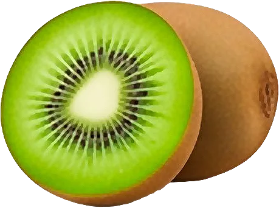

Kiwi

Le kiwi de l’Adour bénéficie d’une IGP et d’un Label Rouge.
- Saison : novembre, décembre, janvier, février, mars, avril
- Pleine saison : décembre, janvier, février
- Famille botanique : Actinidiacées
Histoire
Originaire de Chine, où on l’appelait « groseille de Chine », le kiwi a été développé en Nouvelle-Zélande au début du XXᵉ siècle. Rebaptisé « kiwi » en 1959 pour l’exportation, en référence à l’oiseau national néo-zélandais, il est cultivé en France depuis les années 1960.
Origine et régions de production
La France produit des kiwis surtout dans le Sud-Ouest :
- Nouvelle-Aquitaine (Adour, Landes)
- Corse
- Auvergne-Rhône-Alpes
Le kiwi de l’Adour bénéficie d’une IGP et d’un Label Rouge.
Bienfaits
Le kiwi est l’un des fruits les plus riches en vitamine C :
- Vitamine C : Un seul kiwi couvre une grande partie des besoins quotidiens.
- Fibres : Il est réputé pour faciliter le transit.
- Actinidine : Une enzyme qui aide à digérer les protéines.
- Énergie modérée : Environ 60 kcal/100 g.
Variétés
- Hayward : Le classique vert, se garde longtemps.
- Kiwi jaune : Chair dorée, plus sucrée.
- Kiwaï : Gros comme un raisin, se croque avec la peau.
- Kiwi de l’Adour : IGP du Sud-Ouest.
Conserver sans gaspiller
- Conservation : À température ambiante pour mûrir, puis au frigo : 2 à 3 semaines.
- Congélation : Pelé, en rondelles : jusqu’à 6 mois, pour les smoothies.
- Rien ne se jette : La peau du kiwi se mange, bien lavée : elle est riche en fibres. Un kiwi trop mûr fait un smoothie.